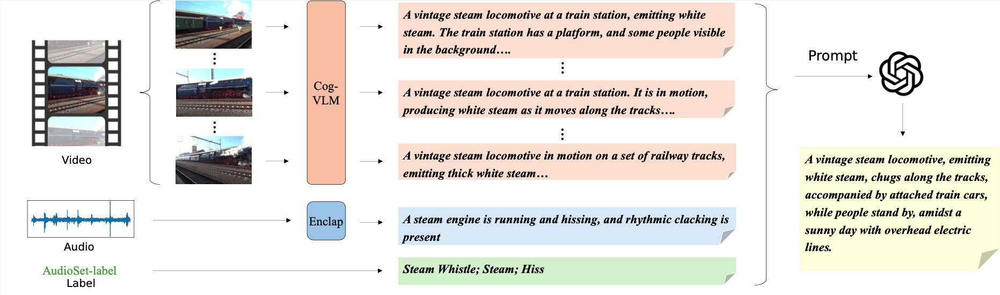

Sound-VECaps: Improving Audio Generation With Visual Enhanced Captions
Yi Yuan1, Dongya Jia2, Xiaobin Zhuang2, Yuanzhe Chen2, Zhengxi Liu2, Zhuo Chen2
Yuping Wang2, Yuxuan Wang2, Xubo Liu1, Xiyuan Kang1 , Mark D. Plumbley1, Wenwu Wang1
1University of Surrey
2ByteDance
Abstract
Generative models have shown significant achievements in audio generation tasks. However, existing models struggle with complex and detailed prompts, leading to potential performance degradation. We hypothesize that this problem stems from the simplicity and scarcity of the training data. This work aims to create a large-scale audio dataset with rich captions for improving audio generation models. We first develop an automated pipeline to generate detailed captions by transforming predicted visual captions, audio captions, and tagging labels into comprehensive descriptions using a Large Language Model (LLM). The resulting dataset, Sound-VECaps, comprises 1.66M high-quality audio-caption pairs with enriched details including audio event orders, occurred places and environment information. We then demonstrate that training the text-to-audio generation models with Sound-VECaps significantly improves the performance on complex prompts. Furthermore, we conduct ablation studies of the models on several downstream audio-language tasks, showing the potential of Sound-VECaps in advancing audio-text representation learning. Our dataset and models are available online.
Note
In this work, we present Sound-VECaps, a lagre-scale caption dataset generated through Large Lange Models (LLMs). The prompt that LLMs used to construct the proposed caption consists of three different information, visual captions from the video, audio captions from the waveform, and the label taggings provided by the original dataset.

Figure 1: The caption generation pipeline of the Sound-VECaps
Sound-VECaps Caption Demos
| Audio | Wavcaps | Auto-ACD | Sound-VECaps_audio | Sound-VECaps_full |
| Dogs are barking with background noise. | A dog snores loudly as it sleeps peacefully in a veterinarian's office, surrounded by other domestic animals. | A dog is snoring softly while resting or sleeping, its eyes closed and tongue slightly sticking out, as the sound of domestic animals provides a gentle accompaniment. | A dog, possibly a bulldog, is snoring softly while resting or sleeping on a wooden floor, its eyes closed and tongue slightly sticking out, as the sound of domestic animals in the background provides a gentle accompaniment. | |
| A power tool is in use. | The sound of a ratchet and pawl can be heard as mechanisms are being operated in a workshop. | A person is using a drill to tighten fasteners, holding a ratchet and mechanisms, in a well-lit workshop, with a toolbox nearby. | A person is using a drill to tighten fasteners while holding a ratchet and mechanisms, on an orange surface, in a well-lit workshop, with a red toolbox nearby, and the camera remains constant throughout the recording. | |
| Music plays as a man sings, and there are skateboard sounds. | The sound of a skateboard rolling can be heard, accompanied by background music, in a park setting. | A skateboarder performs tricks on stairs and rails, accompanied by music and sounds, as people watch and take photos in a sunny outdoor setting. | A skateboarder performs tricks on concrete stairs and rails while music plays in the background, accompanied by rustling and banging sounds, as people watch and take photos in a sunny outdoor setting with trees and a building. | |
| Firecrackers pop as men converse in a noisy environment. | Gunshots ring out followed by a man speaking in an urban setting, as indicated by the audio-visual label 'Firecracker; Speech; Outside, urban or manmade'. | Fireworks are going off outside while a man is speaking, followed by a dark scene with bright lights illuminating from the top. | Fireworks are going off outside while a man is speaking, followed by the sound of a dark, possibly nighttime scene with bright lights illuminating from the top. | |
| A group of men are speaking and making mechanical sounds. | A man delivers a speech in a small room, with the audio-visual label indicating the presence of speech. | An adult male is speaking in a room, gesturing with his hands and expressing himself. | An adult male is speaking in a room with various items on shelves, including bottles and possibly art supplies, while gesturing with his hands and expressing himself, with a blurred effect suggesting movement or a low-quality camera. | |
| Human sounds and music play. | A cat meows while music plays in a dressing room. | A man is singing along to music, accompanied by the sound of a cat meowing, as he moves around in a bathroom setting. | A man with cat-like face paint and a playful expression is singing along to music, accompanied by the sound of a cat meowing, as he moves around in a bathroom or similar setting. | |
| Typing, mechanisms, beeps, and ticking can be heard. | The sound of a typewriter fills a small room as the person types on the keyboard. | A person types away on a typewriter, feeding paper into the machine while sitting in a quiet indoor environment, possibly an office or study room, surrounded by blurred background sounds. | A person types away on a vintage green typewriter with a red stripe, feeding paper into the machine while sitting in a quiet indoor environment, possibly an office or study room, surrounded by blurred background sounds. |
TTA Generation Demos (AudioLDM trained on Sound-VECaps)
| Video | Caption | Result |
| A tattooed man is cooking in a kitchen with a white stove, using a wooden spoon to stir chopped green vegetables in a black skillet. The kitchen is filled with various containers and kitchen tools. Wood clanks on the metal pan, followed by gravel crunching as food and oil sizzle invitingly. | ||
| In a dimly lit, rustic indoor setting, pigeons of various colors, including white, black, and brown, rustle and coo around wooden perches and feeding platforms on a rough concrete floor, creating an atmosphere reminiscent of a pigeon loft or shelter. | ||
| A woman is speaking from a microphone at an outdoor event, likely a school function, on a stage with a green backdrop, banner with a shield-like emblem, and various plants. The weather appears clear, with several people seated on the stage and in the audience, attentively listening. | ||
| A man uses a chainsaw to cut down a tree amid a grassy field with scattered debris. The surroundings include fallen branches, stumps, and logs. The sky is overcast with occasional sunlight filtering through, adding a peaceful yet industrious atmosphere. | ||
| A train sounds its horn while traveling on the tracks, passing through a lush, green forest with partly cloudy skies. Reflections of the dense evergreens and occasional clearings are visible in the train windows, enhancing the serene, natural ambiance. The train's motion blurs the vibrant landscape, giving a sense of considerable speed. | ||
| An adult male, likely a political figure, stands behind a podium adorned with the U.S. presidential seal, flanked by U.S. and Myanmar flags. He addresses a crowd under clear skies, discussing Myanmar's democratic progress and reconciliation, as captured in a live CNN broadcast with subtitles highlighting the ongoing peace process. | ||
| A dog barks as a man speaks amidst chirping birds and wind blowing into a microphone. The scene is an open grassy field with trees, scattered objects, tents, and vehicles, suggesting a park event. The dog, possibly a Border Collie or sheepdog, chases a yellow frisbee under a clear sky. |